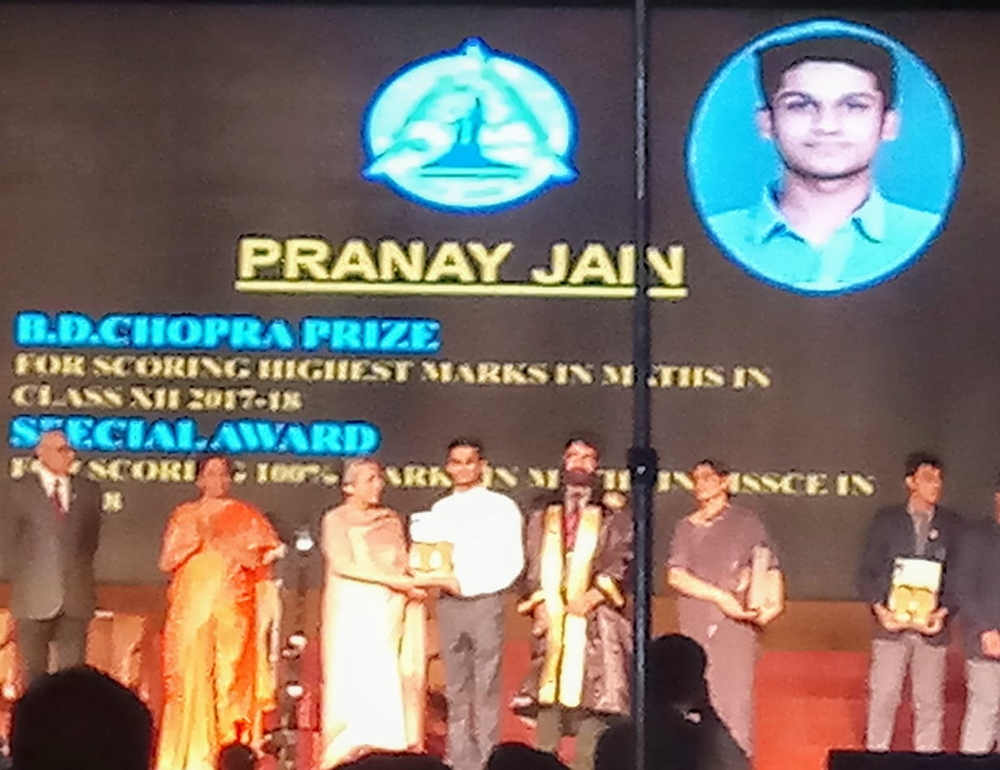

Chapter One
School
Sports defined my school years. I was deeply passionate about athletics, and I believe some of my strongest qualities and core values were forged on the basketball court. Through the end of 11th grade, sports consumed my world. I competed in and won numerous tournaments across multiple levels.

I had the honour of being chosen as the flag bearer of my house, a recognition reserved for the student with the most outstanding sports achievements.

Then came 12th grade, and something shifted. A growing love for science and hard questions pulled me in a new direction. For the first time in my life, I actually studied, and I absolutely loved it. That year of focus paid off: I graduated top of my class and received the B.D. Chopra Prize and Academic Excellence Award from the Finance Minister of India.